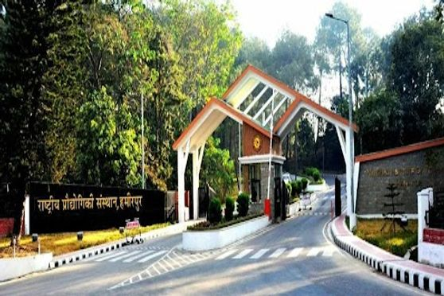
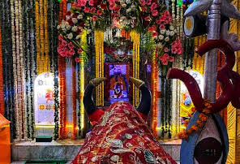
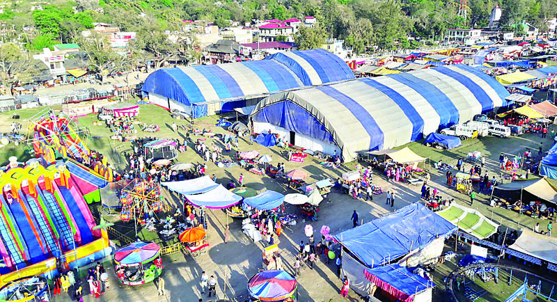
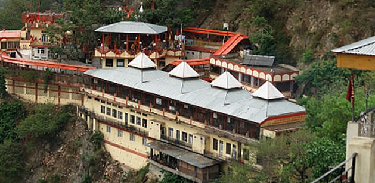
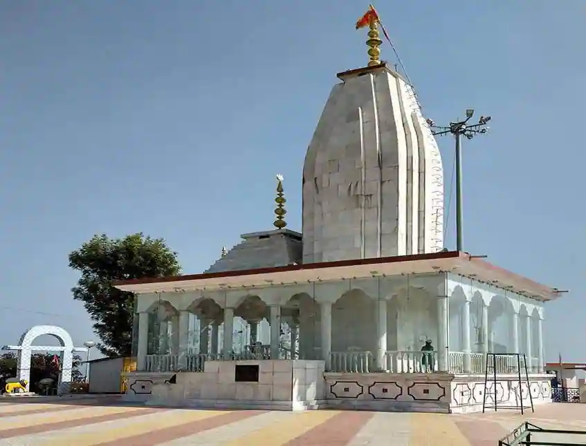
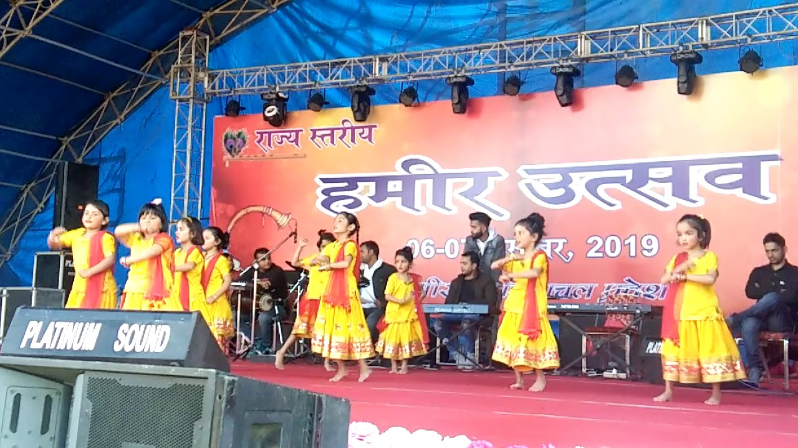

Fair And Festivel In Hamirpur:
Hamirpur was named after the Katoch king Raja Hamir Chanda,
and was carved out of the Kangra District.
Due to its pleasant climate especially during the winters,
Hamirpur is a popular tourist destination. The town also has
the highest density of roads and is thus one of the most accessible
areas of Himachal Pradesh. Here is a list of the various tourist attractions in Hamirpur.

Hamirpur Fairs & Festivals:
Fairs in Hamirpur:
1. Gasota Mahadev Fair:
This is a place about 10 kms. away from Hamirpur on Jahu road.The legend goes that some 500 years ago a farmer of Langwan Tikka while ploughing the fields got his ploughs stuck against a stone from which blood and milk gushed out.This unusual event was treated as sacred by the people and it was decided to place the stone in a temple but the stone became so heavy that it was not possible to lift it at all.Therefore, the people decided to construct a temple over it.Ever-since, the people consider this stone as Shivling and worship till today.Indeed, a fair is held here every year for eight days beginning from first Monday of Jaistha.With the passage of time, this religious festival has assumed the commercial undertones where a big cattle show is held every year and people as far as from Punjab and Haryana come to participate in the cattle transaction which runs in lacs

2.Sujanpur Holi Fair:
Holi fair of Tira Sujanpur has a historical background of its own.It is said that during the princely days, Raja Sansar Chand of Kangra used to participate in the Holi festival here which used to be held every year in the month of Phalguna.There used to be a tank which still exists and used to get filled up with coloured water and then people used to play holi joined by Raja Sansar Chand and his courtiers.The significance of the festival during those days is evident enough from the wall paintings of the fort which depicts the celebration of Holi of Tira Sujanpur in the princely days in the walls of the fort.People from far and wide come to celebrate it even till today and the peagants of Gods and Goddesses are taken through the market place with great pump and fan fair

3. Baba Deothsidh Fair:
A religious fair is held on every Sunday of Jaistha.Thousands of people from far and wide come to join the celebration.In order to propitiate Baba Balak Nath, people offer goats to the Baba Balak Nath which are sacrificed in his honour.

4.Awah Devi Fair :
A temple of Goddess Awah Devi is situated there, where a festival is held in her honour.People as far as from Mandi, Bilaspur and Punjab come to participate in this festival to propitiate the presence of the Goddess Awah Devi.

5.Hamir utsav :
State Level Hamir Utsav – 2019 is being celebrated at Play Ground, GSSS (Boys) Hamirpur, HP on 6th and 7th December
The Hamir Utsav is celebrated in the memory of existence of Hamirpur Distt. with Cultural programs show casing the folk music and dances of Himachal Pradesh and other states. It is a very famous fair in Hamirpur and celebrated with full enthusiasm.

Festivals in Hamirpur:
1. Chet:
(Dholru) is the first month of the lunar year and the first day of the month is cellebrated with a belief to bring hapiness and prosperity. This festival is known as Chatrali in Kullu and Dholru in Bharmaur area of Chamba district. In district Kangra, Hamirpur and Bilaspur, first day of Chet month hold special importance.
2. Dushehra:
Celebrations of Dushehra are same in all the places of India. It is celebrated on the month of Spetember or October. On Dashmi - 10th day of celebration, people make a bonfire of effigies of Ravna, Kumbhkarna and Meghnatha. It symbolises victory of good over evil. Dushehra of Kullu is famous all over the world.